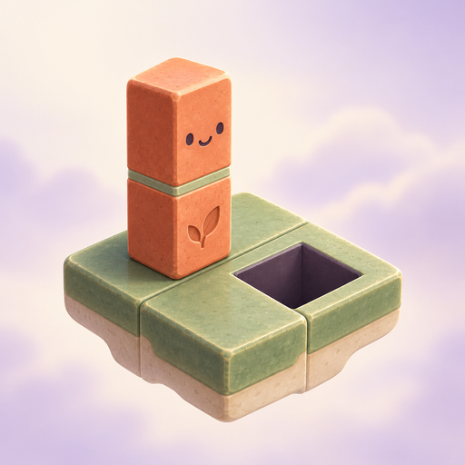
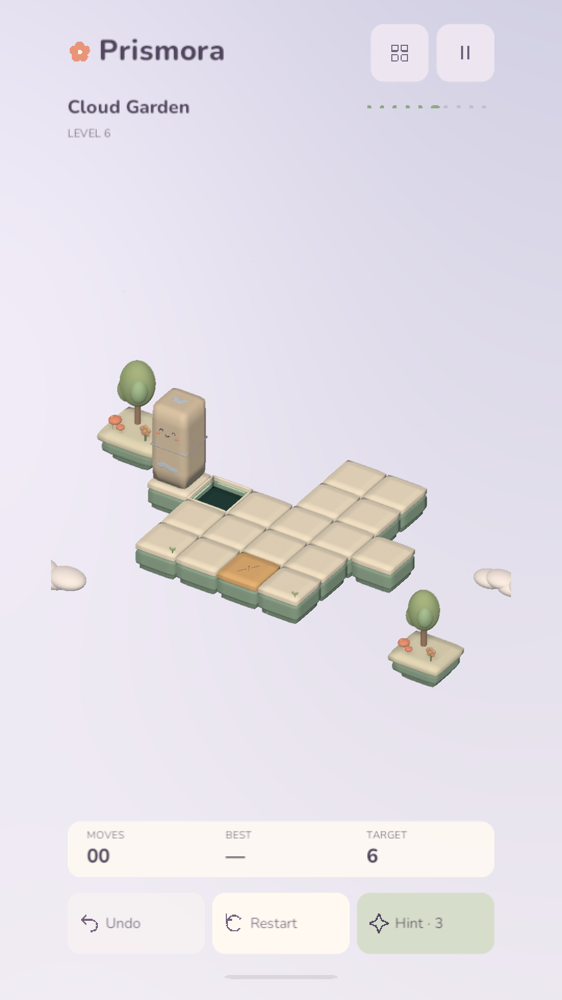
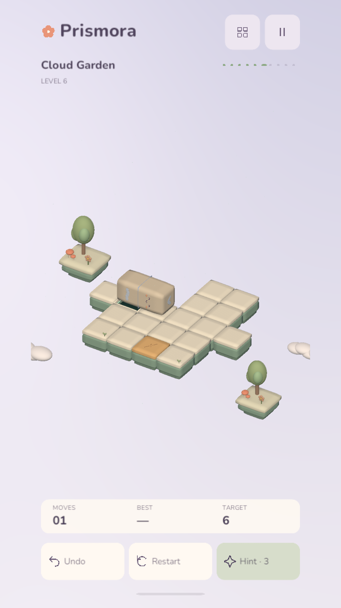
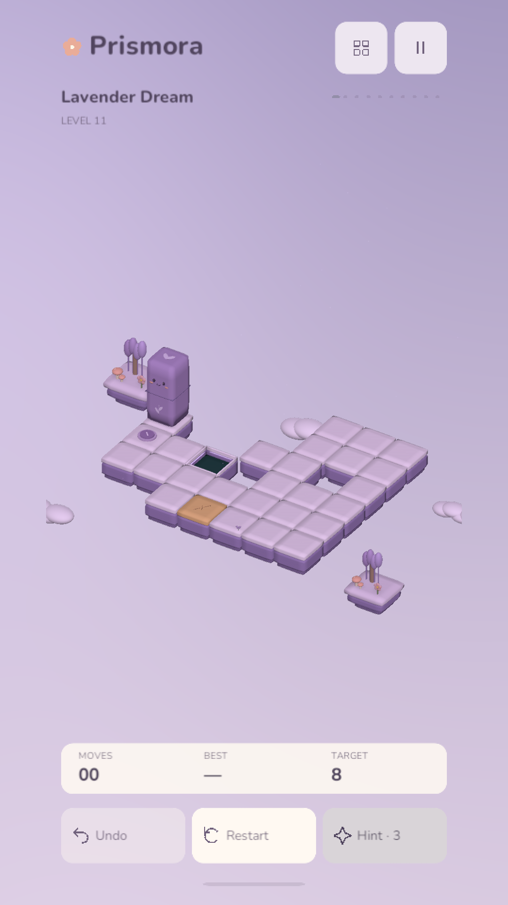
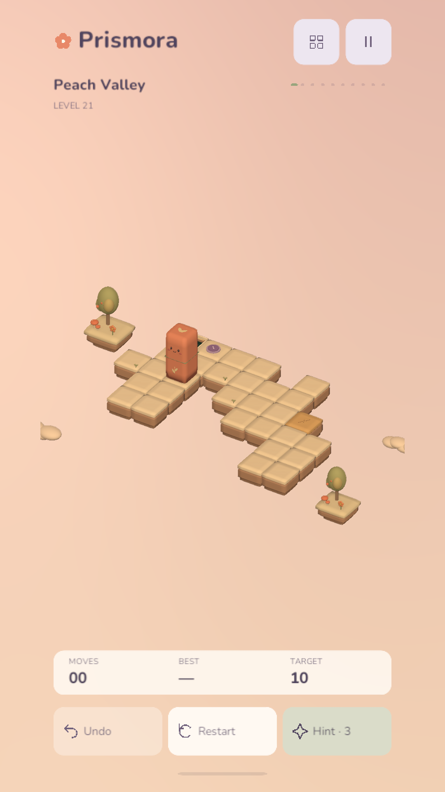

Easy to pick up
Five simple opening puzzles introduce the gestures and mechanics. The challenge grows with you.
Swipe a little prism across floating paths and land upright in the hole. A thoughtful 3D puzzle with gentle music and a world that changes as you go.
Android release in preparation.
How to play
Five simple opening puzzles introduce the gestures and mechanics. The challenge grows with you.
Procedural puzzles checked for a solution, with fragile tiles, switches and bridges along the way.
Cloud gardens, moonlight and aurora skies. Original chill music, offline puzzles and local saves.




Actual gameplay captured from the Unity game in a portrait layout.
English · Türkçe · हिन्दी · Bahasa Indonesia · Français · Deutsch · Italiano · Español
Made by Kobu Games. Listed under the KoBu developer account on Google Play.